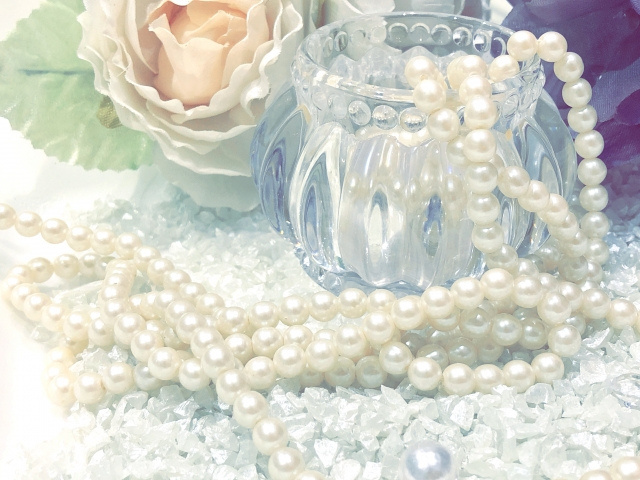
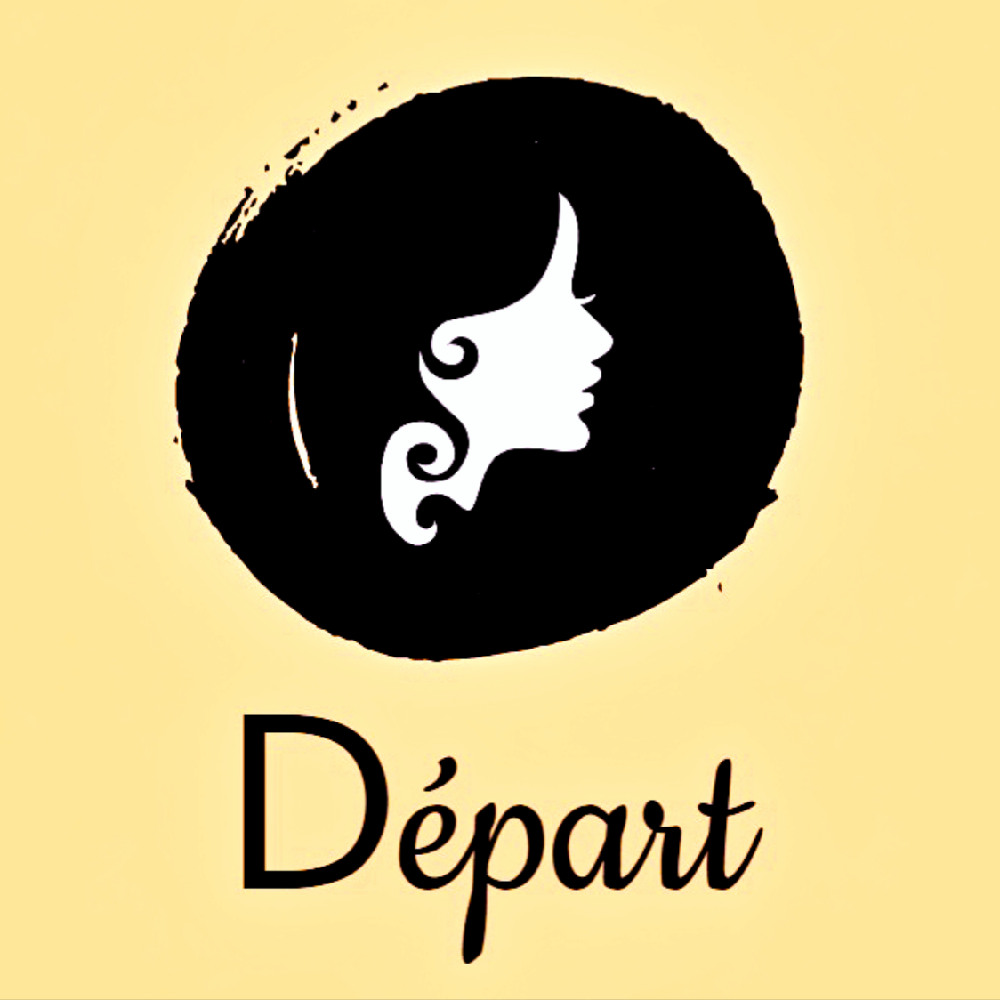

Départ ～デパール～
福岡を拠点に全国対応する、コーチング・キャリア相談事業のWebサイトです。クライアントの要望を確認しながら、サービス内容、実績、相談の流れ、問い合わせ先を一つのページに整理しました。制作後も文章やレイアウトの改善を継続しています。
Web Design / Coding / Operation
コーチング事業の魅力と信頼感が伝わるよう、情報設計からHTML・CSSでの実装、公開、検索対応、その後の更新まで一貫して担当しました。

LIVE WEBSITE
福岡を拠点に全国対応する、コーチング・キャリア相談事業のWebサイトです。クライアントの要望を確認しながら、サービス内容、実績、相談の流れ、問い合わせ先を一つのページに整理しました。制作後も文章やレイアウトの改善を継続しています。
伝えたい内容をヒアリングし、利用者がサービス内容や相談方法を順番に理解できるページ構成へ整理しました。
PCとスマートフォンの両方で読みやすいレイアウトを実装。画像の見え方や文字の改行も画面幅に合わせて調整しました。
独自ドメイン、サイトマップ、Google Search Consoleを設定。公開後も要望に応じて文章や実績欄を更新しています。
コーチングサイト「Départ ～デパール～」は現在も公開・運用中です。